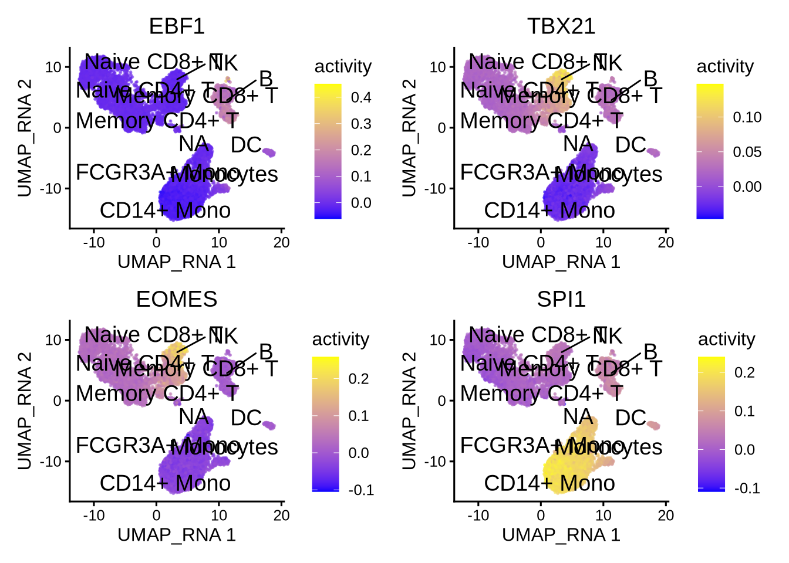

2 Basic workflow with MultiAssayExperiment
In this chapter, we illustrate the epiregulon workflow starting from data in the form of SingleCellExperiment objects using the correlation weight estimation method.
This tutorial demonstrates the basic functions of epiregulon, using the reprogram-seq dataset which can be downloaded from the scMultiome package. In this example, prostate cancer cells (LNCaP) were infected in separate wells with viruses encoding 4 transcription factors (NKX2-1, GATA6, FOXA1 and FOXA2) and a positive control (mNeonGreen) before pooling. The identity of the infected transcription factors was tracked through cell hashing (available in the field hash_assignment of the colData) and serves as the ground truth.
2.1 Data preparation
Prior to using epiregulon, single cell preprocessing needs to performed by user’s favorite methods. The following components are required:
1. Peak matrix from scATAC-seq containing the chromatin accessibility information
2. Gene expression matrix from either paired or unpaired scRNA-seq. RNA-seq integration needs to be performed for unpaired dataset.
3. Dimensionality reduction matrix from with either single modalities or joint scRNA-seq and scATAC-seq
## Loading required package: AnnotationHub## Loading required package: BiocFileCache## Loading required package: dbplyr##
## Attaching package: 'AnnotationHub'## The following object is masked from 'package:Biobase':
##
## cache## Loading required package: ExperimentHub## Loading required package: MultiAssayExperiment## Loading required package: SingleCellExperiment## snapshotDate(): 2024-03-11## see ?scMultiome and browseVignettes('scMultiome') for documentation## Warning: Corrupt Cache: resource path
## See AnnotationHub's TroubleshootingTheHubs vignette section on corrupt cache
## cache: /gstore/home/wlodarct/.cache/R/ExperimentHub
## potential duplicate files:
## 5e9d57d2f82f_7843
## 72c310f8bfcd_7843
## Continuing with first found cached file## loading from cache## Warning: Corrupt Cache: resource path
## See AnnotationHub's TroubleshootingTheHubs vignette section on corrupt cache
## cache: /gstore/home/wlodarct/.cache/R/ExperimentHub
## potential duplicate files:
## 5e9d57d2f82f_7843
## 72c310f8bfcd_7843
## Continuing with first found cached file# extract peak matrix
PeakMatrix <- mae[["PeakMatrix"]]
# extract expression matrix
GeneExpressionMatrix <- mae[["GeneExpressionMatrix"]]
rownames(GeneExpressionMatrix) <- rowData(GeneExpressionMatrix)$name
# define the order of hash_assigment
GeneExpressionMatrix$hash_assignment <- factor(as.character(GeneExpressionMatrix$hash_assignment),
levels = c("HTO10_GATA6_UTR", "HTO2_GATA6_v2", "HTO8_NKX2.1_UTR", "HTO3_NKX2.1_v2",
"HTO1_FOXA2_v2", "HTO4_mFOXA1_v2", "HTO6_hFOXA1_UTR", "HTO5_NeonG_v2"))
# extract dimensional reduction matrix
reducedDimMatrix <- reducedDim(mae[['TileMatrix500']], "LSI_ATAC")
# transfer UMAP_combined from TileMatrix to GeneExpressionMatrix
reducedDim(GeneExpressionMatrix, "UMAP_Combined") <- reducedDim(mae[['TileMatrix500']], "UMAP_Combined")Visualize singleCellExperiment by UMAP
scater::plotReducedDim(GeneExpressionMatrix,
dimred = "UMAP_Combined",
text_by = "Clusters",
colour_by = "Clusters")
2.2 Quick start
2.2.1 Retrieve bulk TF ChIP-seq binding sites
First, we retrieve a GRangesList object containing the binding sites of all the transcription factors and co-regulators. These binding sites are derived from bulk ChIP-seq data in the ChIP-Atlas and ENCODE databases. For the same transcription factor, multiple ChIP-seq files from different cell lines or tissues are merged. For further information on how these peaks are derived, please refer to ?epiregulon::getTFMotifInfo. Currently, human genomes hg19 and hg38 and mouse mm10 are supported.
## snapshotDate(): 2024-03-11## see ?scMultiome and browseVignettes('scMultiome') for documentation## loading from cache## GRangesList object of length 1558:
## $AEBP2
## GRanges object with 2700 ranges and 0 metadata columns:
## seqnames ranges strand
## <Rle> <IRanges> <Rle>
## [1] chr1 9792-10446 *
## [2] chr1 942105-942400 *
## [3] chr1 984486-984781 *
## [4] chr1 3068932-3069282 *
## [5] chr1 3069411-3069950 *
## ... ... ... ...
## [2696] chrY 8465261-8465730 *
## [2697] chrY 11721744-11722260 *
## [2698] chrY 11747448-11747964 *
## [2699] chrY 19302661-19303134 *
## [2700] chrY 19985662-19985982 *
## -------
## seqinfo: 25 sequences from an unspecified genome; no seqlengths
##
## ...
## <1557 more elements>2.2.2 Link ATAC-seq peaks to target genes
Next, we try to link ATAC-seq peaks to their putative target genes. We assign a peak to a gene within a size window (default ±250kb) if the chromatin accessibility of the peak and expression of the target genes are highly correlated (default threshold 0.5). To compute correlations, we first create cell aggregates by performing k-means clustering on the reduced dimensionality matrix. Then we aggregate the counts of the gene expression and peak matrix and average across the number of cells. Correlations are computed on the averaged gene expression and chromatin accessibility.
If cluster labels are provided, peak-to-gene correlations are computed on all the cells and for each cluster. Peak-to-gene links are retained as long as any of the correlations pass the threshold; the longer list of peak-to-gene links capture both inter- and intra-cluster variations.
set.seed(1010)
p2g <- calculateP2G(peakMatrix = PeakMatrix,
expMatrix = GeneExpressionMatrix,
reducedDim = reducedDimMatrix,
exp_assay = "normalizedCounts",
peak_assay = "counts")## Using epiregulon to compute peak to gene links...## performing k means clustering to form metacells## Computing correlation## DataFrame with 11342 rows and 8 columns
## idxATAC chr start end idxRNA target Correlation distance
## <integer> <character> <integer> <integer> <integer> <array> <matrix> <integer>
## 1 12 chr1 924540 925040 27 PLEKHN1 0.514480 39440
## 2 18 chr1 943046 943546 19 FAM41C 0.634958 72646
## 3 19 chr1 944445 944945 26 KLHL17 0.527835 13637
## 4 22 chr1 960317 960817 33 AGRN 0.683067 57301
## 5 25 chr1 976232 976732 27 PLEKHN1 0.714727 9551
## ... ... ... ... ... ... ... ... ...
## 11338 126565 chrX 154516796 154517296 36406 G6PD 0.531183 27548
## 11339 126566 chrX 154524810 154525310 36395 TAZ 0.528253 113072
## 11340 126571 chrX 154542392 154542892 36401 LAGE3 0.522857 62936
## 11341 126574 chrX 154607299 154607799 36406 G6PD 0.520784 60254
## 11342 126583 chrX 155026775 155027275 36423 BRCC3 0.605565 421432.2.3 Add TF motif binding to peaks
The next step is to add the TF binding information by overlapping regions of the peak matrix with the bulk chip-seq database. The output is a data frame object with three columns:
idxATAC- index of the peak in the peak matrixidxTF- index in the gene expression matrix corresponding to the transcription factortf- name of the transcription factor
## Computing overlap...## Success!## idxATAC idxTF tf
## 2312 12 3 AFF4
## 2313 12 8 ARID2
## 2314 12 13 ARNT
## 2315 12 18 ATF3
## 2316 12 23 BACH1
## 2317 12 25 BCL11A2.2.4 Generate regulons
A DataFrame, representing the inferred regulons, is then generated. The DataFrame consists of ten columns:
idxATAC- index of the peak in the peak matrixchr- chromosome numberstart- start position of the peakend- end position of the peakidxRNA- index in the gene expression matrix corresponding to the target genetarget- name of the target genedistance- distance between the transcription start site of the target gene and the middle of the peakidxTF- index in the gene expression matrix corresponding to the transcription factortf- name of the transcription factorcorr- correlation between target gene expression and the chromatin accessibility at the peak. if cluster labels are provided, this field is a matrix with columns names corresponding to correlation across all cells and for each of the clusters.
## DataFrame with 1664198 rows and 10 columns
## idxATAC chr start end idxRNA target distance idxTF tf corr
## <integer> <character> <integer> <integer> <integer> <character> <integer> <integer> <character> <matrix>
## 1 12 chr1 924540 925040 27 PLEKHN1 39440 3 AFF4 0.51448
## 2 12 chr1 924540 925040 27 PLEKHN1 39440 8 ARID2 0.51448
## 3 12 chr1 924540 925040 27 PLEKHN1 39440 13 ARNT 0.51448
## 4 12 chr1 924540 925040 27 PLEKHN1 39440 18 ATF3 0.51448
## 5 12 chr1 924540 925040 27 PLEKHN1 39440 23 BACH1 0.51448
## ... ... ... ... ... ... ... ... ... ... ...
## 1664194 126583 chrX 155026775 155027275 36423 BRCC3 42143 1540 ZNF883 0.605565
## 1664195 126583 chrX 155026775 155027275 36423 BRCC3 42143 1541 ZNF891 0.605565
## 1664196 126583 chrX 155026775 155027275 36423 BRCC3 42143 1551 ZSCAN31 0.605565
## 1664197 126583 chrX 155026775 155027275 36423 BRCC3 42143 1557 ZXDB 0.605565
## 1664198 126583 chrX 155026775 155027275 36423 BRCC3 42143 1558 ZXDC 0.6055652.2.5 Network pruning (highly recommended)
Epiregulon prunes the network by performing tests of independence on the observed number of cells jointly expressing transcription factor (TF), regulatory element (RE) and target gene (TG) vs the expected number of cells if TF/RE and TG are independently expressed. The users can choose between two tests, the binomial test and the chi-square test. In the binomial test, the expected probability is P(TF, RE) * P(TG), and the number of trials is the total number of cells, and the observed successes is the number of cells jointly expressing all three elements. In the chi-square test, the expected probability for having all 3 elements active is also P(TF, RE) * P(TG) and the probability otherwise is 1- P(TF, RE) * P(TG). The observed cell count for the category of “active TF” is the number of cells jointly expressing all three elements, and the cell count for the inactive category is n - n_triple.
We calculate cluster-specific p-values if users supply cluster labels. This is useful if we are interested in cluster-specific networks. The pruned regulons can then be used to visualize differential networks for transcription factors of interest.
pruned.regulon <- pruneRegulon(expMatrix = GeneExpressionMatrix,
exp_assay = "normalizedCounts",
peakMatrix = PeakMatrix,
peak_assay = "counts",
test = "chi.sq",
regulon[regulon$tf %in% c("NKX2-1","GATA6","FOXA1","FOXA2", "AR"),],
clusters = GeneExpressionMatrix$Clusters,
prune_value = "pval",
regulon_cutoff = 0.05
)
pruned.regulon2.2.6 Add Weights
While the pruneRegulon function provides statistics on the joint occurrence of TF-RE-TG, we would like to further estimate the strength of regulation. Biologically, this can be interpreted as the magnitude of gene expression changes induced by transcription factor activity. Epiregulon estimates the regulatory potential using one of the three measures: 1) correlation between TF and target gene expression, 2) mutual information between the TF and target gene expression and 3) Wilcoxon test statistics of target gene expression in cells jointly expressing all 3 elements vs cells that do not.
Two of the measures (correlation and Wilcoxon statistics) give both the magnitude and directionality of changes whereas mutual information is always positive. The correlation and mutual information statistics are computed on pseudobulks aggregated by user-supplied cluster labels, whereas the Wilcoxon method groups cells into two categories: 1) the active category of cells jointly expressing TF, RE and TG and 2) the inactive category consisting of the remaining cells.
We calculate cluster-specific weights if users supply cluster labels.
2.2.7 (Optional) Annotate with TF motifs
So far the gene regulatory network was constructed from TF ChIP-seq exclusively. Some users would prefer to further annotate regulatory elements with the presence of motifs. We provide an option to annotate peaks with motifs from the Cisbp database. If no motifs are present for this particular factor (as in the case of co-factors or chromatin modifiers), we return NA. If motifs are available for a factor and the RE contains a motif, we return 1. If motifs are available and the RE does not contain a motif, we return 0.
regulon.w.motif <- addMotifScore(regulon = regulon.w,
peaks = rowRanges(PeakMatrix),
species = "human",
genome = "hg38")## annotating peaks with motifs## snapshotDate(): 2024-03-11## see ?scMultiome and browseVignettes('scMultiome') for documentation## loading from cache## ##
## Attaching package: 'XVector'## The following object is masked from 'package:plyr':
##
## compact##
## Attaching package: 'Biostrings'## The following object is masked from 'package:grid':
##
## pattern## The following object is masked from 'package:base':
##
## strsplit##
## Attaching package: 'rtracklayer'## The following object is masked from 'package:BiocIO':
##
## FileForFormat## The following object is masked from 'package:AnnotationHub':
##
## hubUrl# if desired, set weight to 0 if no motif is found
regulon.w.motif$weight[regulon.w.motif$motif == 0] <- 0
regulon.w.motif## DataFrame with 5183 rows and 15 columns
## idxATAC chr start end idxRNA target distance idxTF tf corr
## <integer> <character> <integer> <integer> <integer> <character> <integer> <integer> <character> <matrix>
## 1 12 chr1 924540 925040 27 PLEKHN1 39440 490 AR 0.514480
## 2 22 chr1 960317 960817 33 AGRN 57301 490 AR 0.683067
## 3 25 chr1 976232 976732 27 PLEKHN1 9551 490 AR 0.714727
## 4 28 chr1 999317 999817 27 PLEKHN1 32636 490 AR 0.666428
## 5 36 chr1 1019834 1020334 37 C1orf159 69838 490 AR 0.507988
## ... ... ... ... ... ... ... ... ... ... ...
## 5179 121777 chr9 97632816 97633316 34691 XPA 62039 807 NKX2-1 0.512977
## 5180 122254 chr9 108991440 108991940 34784 CTNNAL1 27686 807 NKX2-1 0.535211
## 5181 122461 chr9 113174265 113174765 34825 SLC31A1 44777 807 NKX2-1 0.693885
## 5182 122486 chr9 113410132 113410632 34829 WDR31 69664 807 NKX2-1 0.687963
## 5183 125664 chrX 103373520 103374020 35972 TCEAL8 118166 807 NKX2-1 0.636336
## pval stats qval weight motif
## <matrix> <matrix> <matrix> <matrix> <numeric>
## 1 0.1100599:0.000116038:1:... 2.55336:14.856005:0:... 1:1:1:... 0:0:0:... 0
## 2 0.0442620:0.507661630:1:... 4.04654: 0.438884:0:... 1:1:1:... 0:0:0:... 0
## 3 0.1684463:0.018871908:1:... 1.89672: 5.513346:0:... 1:1:1:... 0:0:0:... 0
## 4 0.0171580:0.015354703:1:... 5.68014: 5.875306:0:... 1:1:1:... 0:0:0:... 0
## 5 0.0111761:0.105168717:1:... 6.43710: 2.625359:0:... 1:1:1:... 0:0:0:... 0
## ... ... ... ... ... ...
## 5179 8.54038e-02:1:1:... 2.95894:0:0:... 1.000000000:1:1:... 0:0:0:... 0
## 5180 1.30998e-02:1:1:... 6.15558:0:0:... 1.000000000:1:1:... 0:0:0:... 0
## 5181 4.51202e-02:1:1:... 4.01414:0:0:... 1.000000000:1:1:... 0:0:0:... 0
## 5182 8.35430e-09:1:1:... 33.19084:0:0:... 0.000220721:1:1:... 0:0:0:... 0
## 5183 5.64410e-06:1:1:... 20.60525:0:0:... 0.147960211:1:1:... 0:0:0:... 02.2.8 Calculate TF activity
Finally, the activities for a specific TF in each cell are computed by averaging expressions of target genes linked to the TF weighted by the test statistics of choice, chosen from either correlation, mutual information or the Wilcoxon test statistics. \[y=\frac{1}{n}\sum_{i=1}^{n} x_i * weights_i\] where \(y\) is the activity of a TF for a cell, \(n\) is the total number of targets for a TF, \(x_i\) is the log count expression of target \(i\) where \(i\) in {1,2,…,n} and \(weights_i\) is the weight of TF - target \(i\)
score.combine <- calculateActivity(expMatrix = GeneExpressionMatrix,
regulon = regulon.w,
mode = "weight",
method = "weightedMean",
exp_assay = "normalizedCounts",
normalize = FALSE)## calculating TF activity from regulon using weightedmean## Warning in calculateActivity(expMatrix = GeneExpressionMatrix, regulon = regulon.w, : The weight column contains multiple
## subcolumns but no cluster information was provided. Using first column to compute activity...## aggregating regulons...## creating weight matrix...## calculating activity scores...## normalize by the number of targets...## 5 x 5 sparse Matrix of class "dgCMatrix"
## reprogram#TTAGGAACAAGGTACG-1 reprogram#GAGCGGTCAACCTGGT-1 reprogram#TTATAGCCACCCTCAC-1 reprogram#TGGTGATTCCTGTTCA-1
## AR 0.02437416 0.03482558 0.01920813 0.021308518
## FOXA1 0.01989094 0.02416234 0.01231442 0.012557325
## FOXA2 0.01003670 0.02380898 0.01132239 0.016970189
## GATA6 0.02399254 0.11312831 0.01405688 0.018020495
## NKX2-1 0.04739232 0.03213549 0.01199183 0.009208308
## reprogram#TCGGTTCTCACTAGGT-1
## AR 0.02496032
## FOXA1 0.02073854
## FOXA2 0.01383926
## GATA6 0.02046804
## NKX2-1 0.047297442.3 Session Info
## R Under development (unstable) (2023-12-04 r85659)
## Platform: x86_64-pc-linux-gnu
## Running under: Ubuntu 18.04.6 LTS
##
## Matrix products: default
## BLAS: /usr/local/lib/R/lib/libRblas.so
## LAPACK: /usr/local/lib/R/lib/libRlapack.so; LAPACK version 3.11.0
##
## Random number generation:
## RNG: L'Ecuyer-CMRG
## Normal: Inversion
## Sample: Rejection
##
## locale:
## [1] LC_CTYPE=en_US.UTF-8 LC_NUMERIC=C LC_TIME=en_US.UTF-8 LC_COLLATE=en_US.UTF-8
## [5] LC_MONETARY=en_US.UTF-8 LC_MESSAGES=en_US.UTF-8 LC_PAPER=en_US.UTF-8 LC_NAME=C
## [9] LC_ADDRESS=C LC_TELEPHONE=C LC_MEASUREMENT=en_US.UTF-8 LC_IDENTIFICATION=C
##
## time zone: Etc/UTC
## tzcode source: system (glibc)
##
## attached base packages:
## [1] parallel stats4 grid stats graphics grDevices utils datasets methods base
##
## other attached packages:
## [1] BSgenome.Hsapiens.UCSC.hg38_1.4.5 BSgenome_1.71.2 rtracklayer_1.63.1
## [4] BiocIO_1.13.0 Biostrings_2.71.4 XVector_0.43.1
## [7] epiregulon_0.99.5 scMultiome_1.3.0 SingleCellExperiment_1.25.0
## [10] MultiAssayExperiment_1.29.1 ExperimentHub_2.11.1 AnnotationHub_3.11.1
## [13] BiocFileCache_2.11.1 dbplyr_2.4.0 BiocStyle_2.31.0
## [16] rhdf5_2.47.6 SummarizedExperiment_1.33.3 Biobase_2.63.0
## [19] RcppArmadillo_0.12.8.1.0 Rcpp_1.0.12 Matrix_1.6-4
## [22] GenomicRanges_1.55.3 GenomeInfoDb_1.39.9 IRanges_2.37.1
## [25] S4Vectors_0.41.4 BiocGenerics_0.49.1 sparseMatrixStats_1.15.0
## [28] MatrixGenerics_1.15.0 matrixStats_1.2.0 data.table_1.15.2
## [31] stringr_1.5.1 plyr_1.8.9 magrittr_2.0.3
## [34] ggplot2_3.5.0 gtable_0.3.4 gtools_3.9.5
## [37] gridExtra_2.3 devtools_2.4.5 usethis_2.2.3
## [40] ArchR_1.0.3
##
## loaded via a namespace (and not attached):
## [1] later_1.3.2 bitops_1.0-7 filelock_1.0.3 R.oo_1.26.0
## [5] tibble_3.2.1 graph_1.81.0 DirichletMultinomial_1.45.0 XML_3.99-0.16.1
## [9] lifecycle_1.0.4 edgeR_4.1.18 lattice_0.22-5 backports_1.4.1
## [13] limma_3.59.6 sass_0.4.9 rmarkdown_2.26 jquerylib_0.1.4
## [17] yaml_2.3.8 remotes_2.5.0 metapod_1.11.1 httpuv_1.6.14
## [21] sessioninfo_1.2.2 pkgbuild_1.4.4 CNEr_1.39.0 cowplot_1.1.3
## [25] DBI_1.2.2 abind_1.4-5 pkgload_1.3.4 zlibbioc_1.49.3
## [29] R.utils_2.12.3 purrr_1.0.2 RCurl_1.98-1.14 pracma_2.4.4
## [33] rappdirs_0.3.3 GenomeInfoDbData_1.2.11 ggrepel_0.9.5 irlba_2.3.5.1
## [37] seqLogo_1.69.0 annotate_1.81.2 dqrng_0.3.2 DelayedMatrixStats_1.25.1
## [41] codetools_0.2-19 DelayedArray_0.29.9 scuttle_1.13.1 tidyselect_1.2.1
## [45] farver_2.1.1 ScaledMatrix_1.11.1 viridis_0.6.5 GenomicAlignments_1.39.4
## [49] jsonlite_1.8.8 BiocNeighbors_1.21.2 ellipsis_0.3.2 motifmatchr_1.25.0
## [53] scater_1.31.2 tools_4.4.0 TFMPvalue_0.0.9 glue_1.7.0
## [57] SparseArray_1.3.4 xfun_0.42 dplyr_1.1.4 HDF5Array_1.31.6
## [61] withr_3.0.0 BiocManager_1.30.22 fastmap_1.1.1 rhdf5filters_1.15.4
## [65] bluster_1.13.0 fansi_1.0.6 caTools_1.18.2 digest_0.6.35
## [69] rsvd_1.0.5 R6_2.5.1 mime_0.12 colorspace_2.1-0
## [73] GO.db_3.18.0 Cairo_1.6-2 poweRlaw_0.80.0 RSQLite_2.3.5
## [77] R.methodsS3_1.8.2 utf8_1.2.4 generics_0.1.3 httr_1.4.7
## [81] htmlwidgets_1.6.4 S4Arrays_1.3.6 TFBSTools_1.41.0 pkgconfig_2.0.3
## [85] blob_1.2.4 htmltools_0.5.7 profvis_0.3.8 bookdown_0.38
## [89] GSEABase_1.65.1 scales_1.3.0 png_0.1-8 scran_1.31.3
## [93] knitr_1.45 rstudioapi_0.15.0 reshape2_1.4.4 tzdb_0.4.0
## [97] rjson_0.2.21 checkmate_2.3.1 curl_5.2.1 cachem_1.0.8
## [101] BiocVersion_3.19.1 miniUI_0.1.1.1 vipor_0.4.7 AnnotationDbi_1.65.2
## [105] restfulr_0.0.15 pillar_1.9.0 vctrs_0.6.5 urlchecker_1.0.1
## [109] promises_1.2.1 BiocSingular_1.19.0 beachmat_2.19.1 xtable_1.8-4
## [113] cluster_2.1.6 beeswarm_0.4.0 Rgraphviz_2.47.0 evaluate_0.23
## [117] KEGGgraph_1.63.0 readr_2.1.5 Rsamtools_2.19.3 locfit_1.5-9.9
## [121] cli_3.6.2 compiler_4.4.0 rlang_1.1.3 crayon_1.5.2
## [125] labeling_0.4.3 fs_1.6.3 ggbeeswarm_0.7.2 stringi_1.8.3
## [129] viridisLite_0.4.2 BiocParallel_1.37.1 munsell_0.5.0 hms_1.1.3
## [133] bit64_4.0.5 Rhdf5lib_1.25.1 statmod_1.5.0 KEGGREST_1.43.0
## [137] shiny_1.8.0 highr_0.10 igraph_2.0.3 memoise_2.0.1
## [141] bslib_0.6.1 bit_4.0.5 EnrichmentBrowser_2.33.1